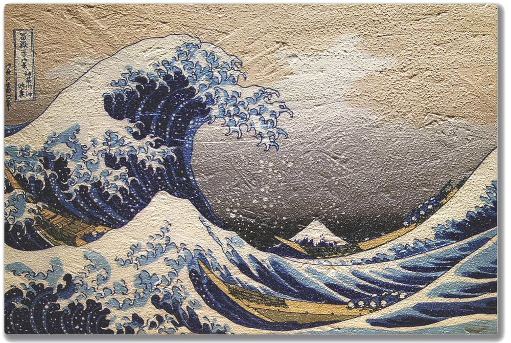
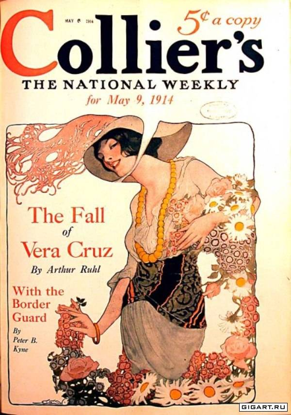
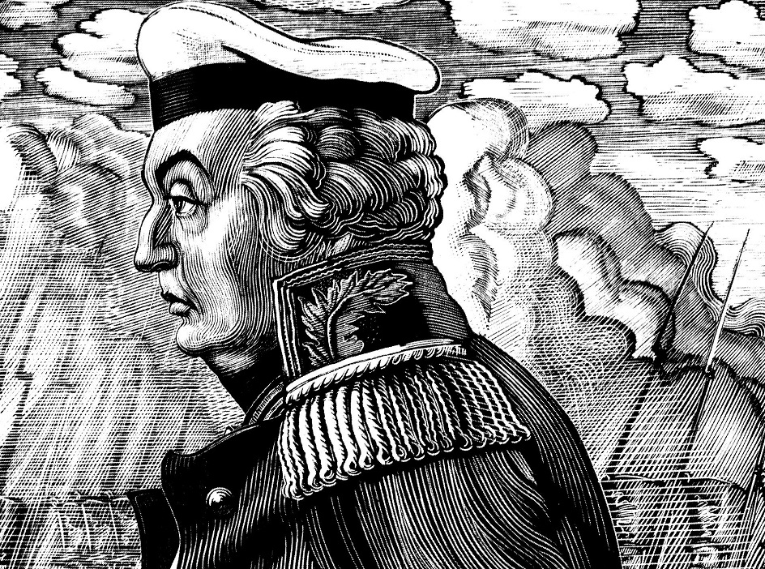
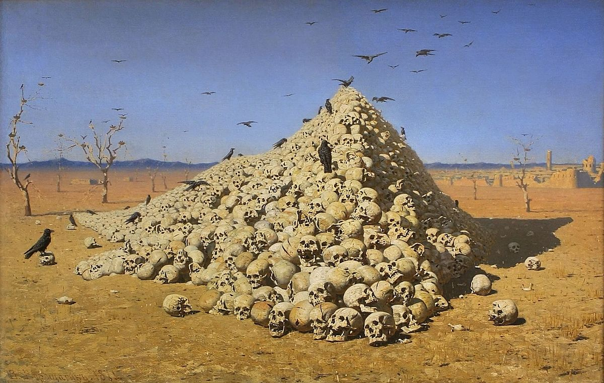
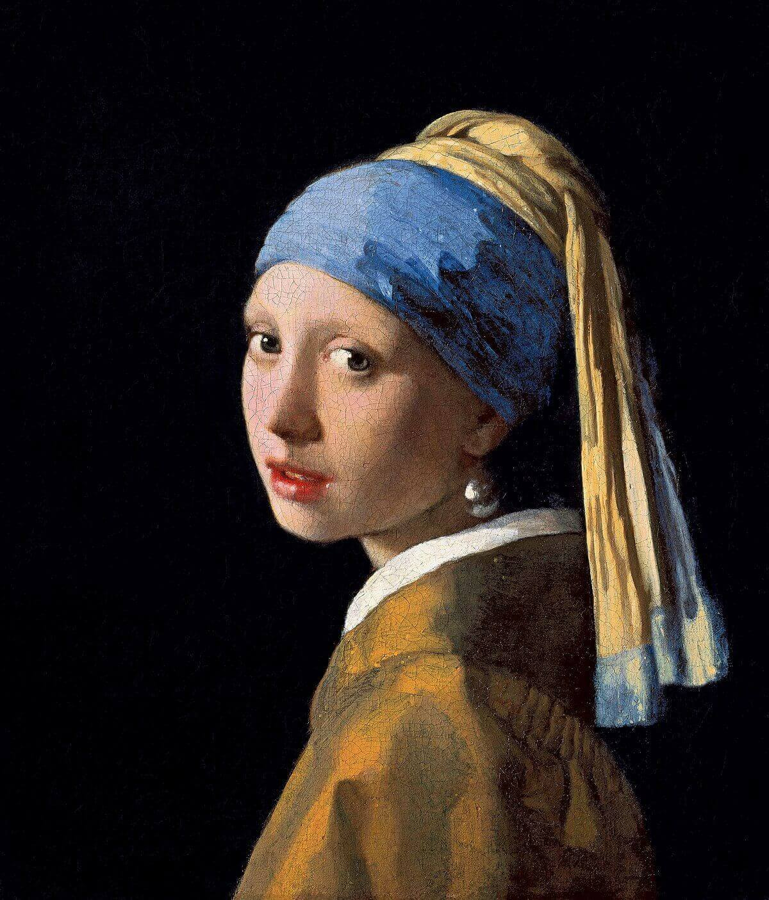
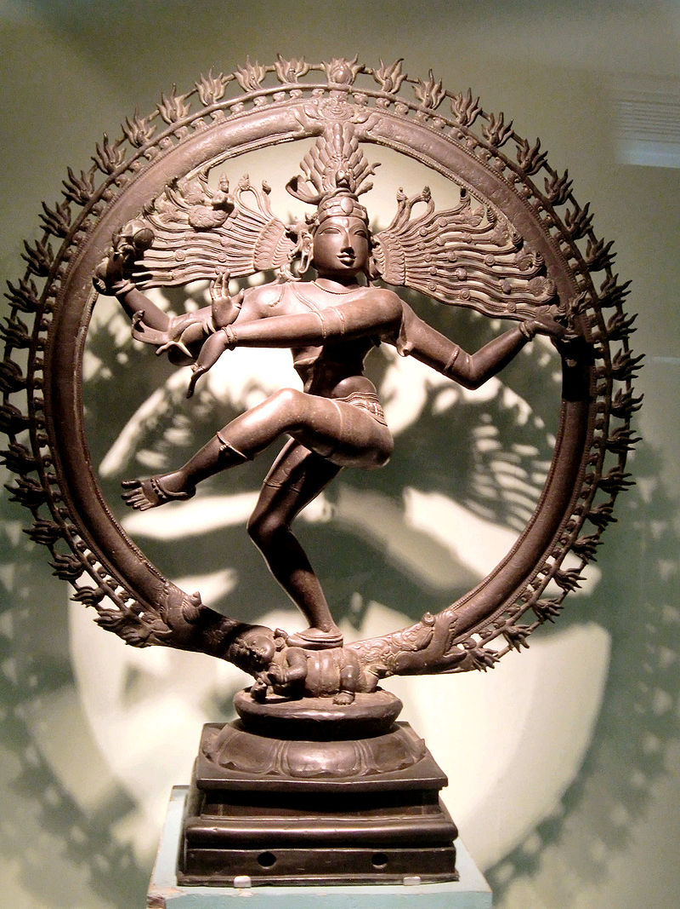
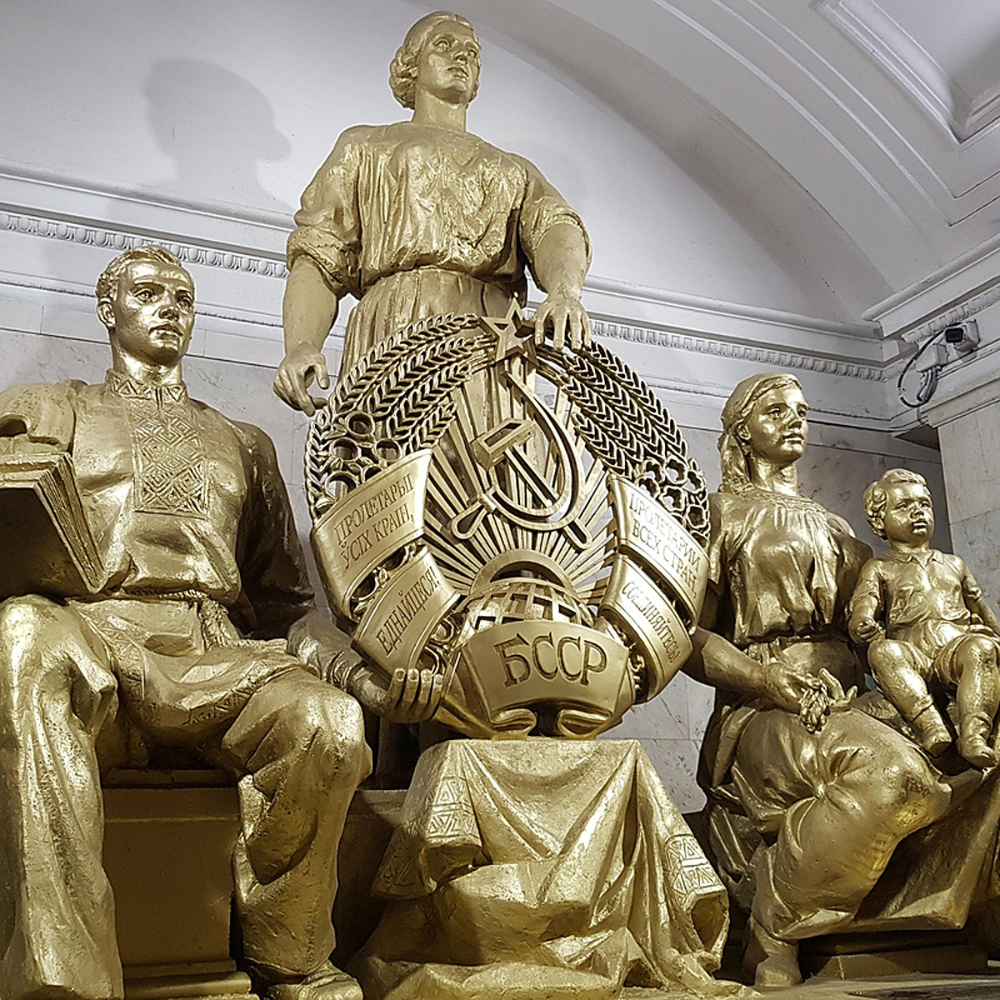
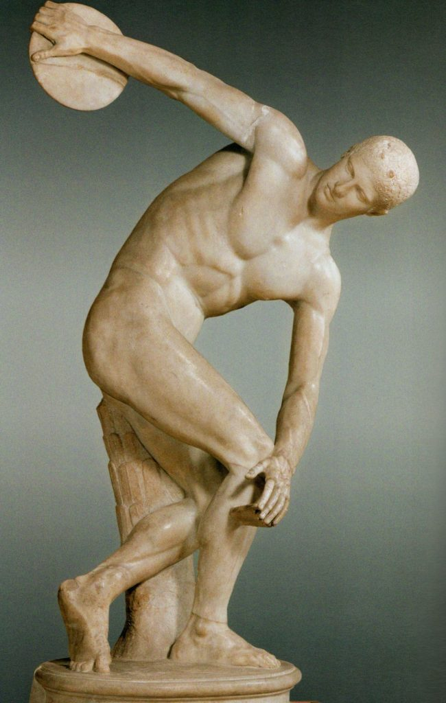
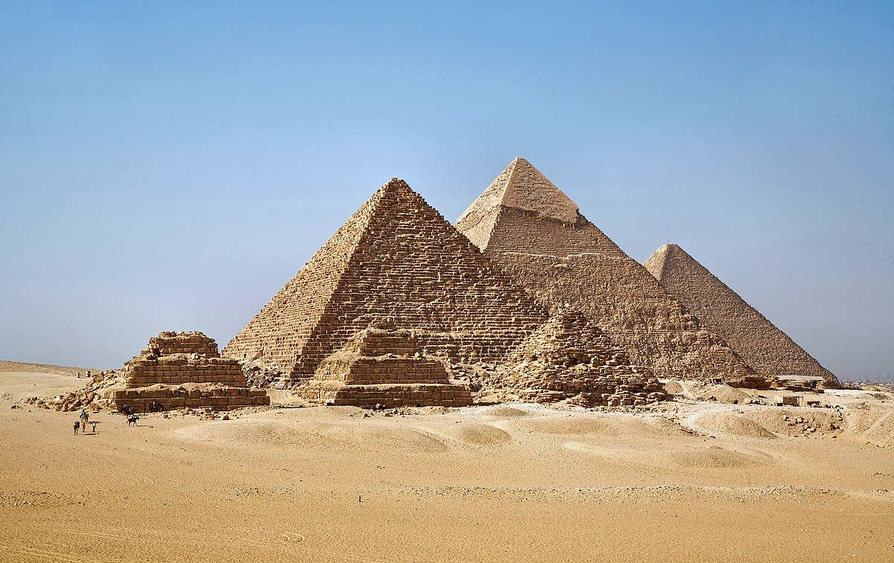
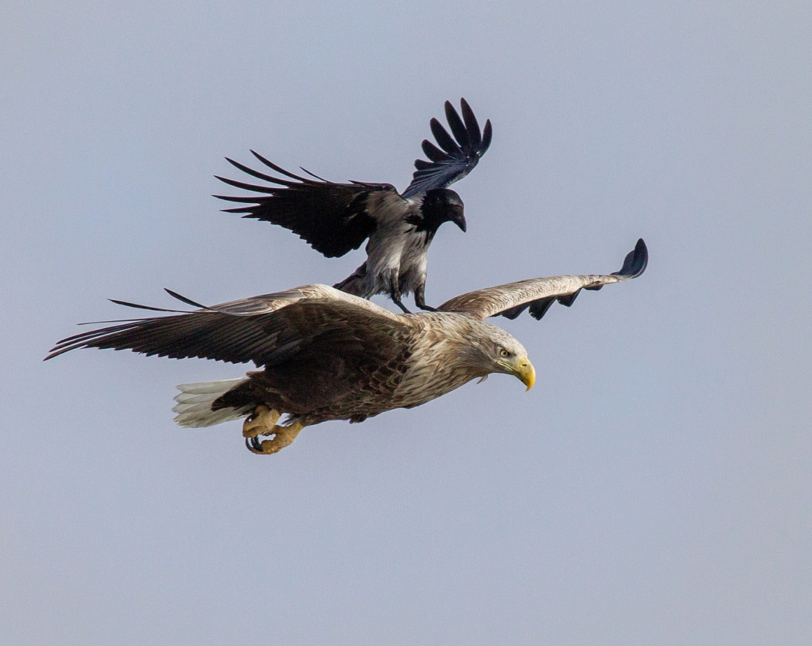

Энциклопедия
Добро пожаловать на страницу энциклопедии! Здесь вы найдете интересную и полезную информацию по всем направлениям изобразительного искусства. Вся информация носит образовательный научно-популярный характер и предоставляется достоверными источниками. Запись по каждому из направлений состоит из общей информации проиллюстрированной работами различных авторов.
Графика
Вид изобразительного искусства, в котором основными изобразительными средствами (графическими) являются свойства изобразительной поверхности (чаще белого листа бумаги) и тональные отношения линий, штрихов и пятен. Составной частью графики является рисунок.

Кацусика Хокусай - "Большая волна в Канагаве"
Определение специфики и границ искусства графики в отличие от живописи, также связанной с изображением на плоскости, всегда интересовало художников и теоретиков искусства. До конца XIX века понятия графики, живописи и рисунка были жёстко разделены. Под графикой понимали только печатные техники: гравюру по дереву и металлу, литографию, монотипию. Под рисунком — «работу от руки», причём лишь в качестве подготовительного материала (эскизы, наброски), но не в качестве самостоятельной разновидности изобразительного искусства. Художник английского модерна У. Крэйн в книге «Линия и форма» (1900) попытался разграничить понятия графического и живописного начала в искусстве, основываясь на различной степени абстрагирования изобразительной формы. Немецкий художник М. Клингер выделил в качестве основополагающего принципа графического искусства отвлечение, абстрагирование тональных отношений от светотени и окрашенности изображаемых объектов, но в качестве обобщаемого названия Клингер предложил технический термин «искусство грифеля» (нем. Griffeikunst), который по понятным причинам не прижился.
В России в начале ХХ века термина графика ещё не существовало, и А. Н. Бенуа для обозначения профессии художников книги, иллюстраторов, рисовальщиков-карикатуристов вынужден был использовать определение «рисовальщик печати». В иных случаях чаще использовали слово «рисунок», а понятие «живописец» использовали в качестве синонима слова «художник». Но уже около 1900 года появляются определения «синтетическое изображение», «графическое мастерство»

Одна из обложек Collier's Weekly
Цвет в графике может применяться, но, в отличие от живописи, он играет вспомогательную роль, и, как правило, локален и абстрагирован от объёмности, светотени, фактуры изображаемого объекта. При работе в графике обычно используют один или два цвета; кроме основного чёрного или красно-коричневого цвета сангины, можно использовать белый (например, белый мел или белила), в особенности на тонированной бумаге. В. А. Фаворский в ксилографиях 1920−1930-х годов и в теоретических статьях в качестве определяющего признака графического искусства (включающего все разновидности рисовальной и печатной графики) выдвинул понятие специфики «изобразительного пространства», которую создаёт белый лист бумаги. Поэтому наиболее общий отличительный признак графики — особое отношение изображаемого предмета к пространству, которое условно обозначает белый или иной условный фон (по выражению художника, — «воздух белого листа»).
В графике, в частности, в гравюрах, может использоваться большое число цветов (например, при цветной печати с нескольких досок), широкая цветовая палитра, как в живописи, но определяющим признаком остаётся условность пространства. Отсюда особое значение силуэта, контурной линии, направленности штриха. Поэтому, согласно современной музейной классификации, к графике относят акварель, гуашь, пастель и другие техники, использующие бумагу, прозрачные краски на водной основе, цветные рисовальные материалы. Кроме контурной линии, в графическом искусстве широко используются штрих и пятно, также контрастирующие с белой (а в иных случаях также цветной, чёрной, или реже — фактурной) поверхностью бумаги или картона. Сочетанием этих изобразительных средств и материалов могут создаваться тональные нюансы. Живопись и графика различаются разной мерой пространственности, проистекающей от различного отношения художника к изобразительной поверхности, хотя эти отношения изменчивы и подвижны. Определяющим признаком, таким образом, становится либо графичность и графическое начало (или принцип) либо противоположное качество — живописность. Поэтому правомочны определения: «графичная живопись» или «живописный рисунок». Первое слово обозначает качество изобразительной формы, второе — принадлежность конкретного произведения к определённому виду искусства.

Владимир Фаворский - "Портрет Кутузова"
Наследие графического искусства многообразно. Оно отмечено работами таких всемирно известных мастеров, как Альбрехт Дюрер (1471-1528), Ре́мбрандт Ха́рменс ван Рейн (1606-1669), Хиросиге Андо (1797-1858), гравёра и рисовальщика Хокусай Кацусика (1760−1849), чьё творчество оказало значительное влияние на европейское искусство конца XIX — начала XX века. Многие художники-живописцы внесли немалый вклад в развитие графики. В современном мире графика и графические средства изображения широко используется в массовой культуре и графическом дизайне: оформление книг, реклама, веб-дизайн, дизайн визуальных коммуникаций, средовой дизайн, кинематография, анимация.
Понятие «графика», по способу создания изображения, включает в себя два больших раздела: рисовальная или уникальная графика и печатная или тиражная графика. Уникальная графика — произведения, созданные в единственном экземпляре (рисунок, набросок, монотипия, коллаж). Печатная графика — произведения, созданные с использованием авторских (изготовленных автором-художником) печатных форм, с которых печатают тираж эстампов (от двух — трёх оттисков до 500—1000 экземпляров, в зависимости от техники и задачи).
Живопись
Наиболее популярный и прославленный в европейской культуре вид изобразительного искусства, произведения которого создаются с помощью красок, наносимых на какую-либо твёрдую поверхность. Основным выразительным средством живописи является цвет.

Василий Верещагин - "Апофеоз войны"
Живопись представляет собой вид искусства, наиболее богатый изобразительными средствами: это не только цвет, вернее отношения хроматических тонов, но и ахроматические тональные отношения (контрасты и нюансы светлого и тёмного), светотеневые градации, графические средства (линия, силуэт), фактура красочного слоя. Искусство живописи по причине столь разнообразных средств тесно связано с картинностью, наглядностью изображения, дающего наиболее полное представление о форме и пространстве изображаемого. Именно этим объясняется популярность этого вида искусства.
В академических словарях искусство живописи определяется исходя из этимологии («живописать» — изображать живо, жизнеподобно). Русское слово «живопись» указывает на тенденцию к реалистичности этого вида искусства в период его становления как искусства станковой картины в технике работы масляными красками. Этот длительный и многосторонний процесс был связан в России, как и ранее в странах Западной Европы, с возникновением и становлением художественных академий.
Соответственно, живопись — творческая деятельность человека, «способность к воспроизведению разнообразных явлений жизни: природы, человека, животного мира, событий из общественной или частной жизни людей…». Искусство живописи, во-первых, основано на передаче окрашенности и освещённости предметов с помощью тепло-холодных отношений хроматических (цветных) тонов спектра и валёров. Во-вторых, живописное восприятие действительности основано на так называемом далевом смотрении на натуру, при котором основным является восприятие объекта во взаимосвязи с пространственной и свето-воздушной средой. При перенесении живописного образа на плоскость холста, деревянной доски, картона или бумаги изобразительная поверхность уподобляется трёхмерному пространству. В этом заключается главное отличие живописного искусства от искусства графики. Отсюда понятие «далевой зрительный образ».

Винсент Ван Гог - "Звездная ночь"
В традиционной истории искусства выделяют несколько основных разновидностей живописи: станковая живопись (то есть картины), монументально-декоративная роспись (фрески и т. п.), театрально-декорационная живопись, цифровые изображения, миниатюра[8]. Иногда в качестве отдельной разновидности рассматривается иконопись.
К станковой живописи относят произведения, созданные на мольберте (то есть на станке) художника и предназначенные для автономного восприятия на выставке, в музее, то есть независимо от окружающего пространства. Поэтому произведения станковой живописи (как и графики) требуют рамы, подчёркивающей это условие. Хотя как правило станковая живопись выполняется на холсте, основой может служить также дерево, а в редких случаях — стекло или металл[9]. Монументально-декоративную живопись правильнее называть росписью, поскольку она мыслится и создаётся в качестве неотъемлемой принадлежности декорируемой поверхности. Искусство мозаики по той же причине, а также в силу специфики творческого метода и техники, рассматривают отдельно как разновидность монументально-декоративного искусства.

Ян Вермеер - "Девушка с жемчужной сережкой"
Наиболее древними образцами «монументальной живописи» (на самом деле архаичных форм графики) являются петроглифы, геоглифы, наскальные рисунки первобытных охотников каменного века, например, рисунки пещер Ляско, Альтамира, Шове, Шульган-Таш. Но они синкретичны по функциям (магическим, ритуальным, гносеологическим, коммуникативным). Эстетические качества и художественно-образный смысл таких изображений ещё не выделены, поэтому и морфологически не определены. Монументальная роспись, мозаика или сграффито выполняется непосредственно на стенах и потолках зданий и других сооружений. В прошлом преобладала живопись минеральными водяными или клеевыми красками по сырой штукатурке (фреска). В Италии до начала XVI века по «чистой фреске» практиковали завершающую прописку деталей темперой. Техника «чистой фрески» требует особого мастерства от художника, поэтому применялись и другие технологии, например, не такая устойчивая живопись по сухой штукатурке — секко, позднее росписи выполнялись малоподходящими для монументальной росписи масляными красками.
Скульптура
Вид изобразительного искусства, произведения которого имеют объёмную форму и выполняются из твёрдых материалов методом высекания, удаления лишнего из начальной массы каменного или иного блока (способ формовычитания).

Танцующий шива
Лепка из мягких материалов (греч. πλαστική — лепка) основана на противоположном способе формосложения, поскольку мастер в этом виде искусства прибавляет, наращивает пластичный материал на каркас. Эти способы в теории и методике преподавания искусства принято разделять на искусство скульптуры и искусство пластики. В творчестве отдельных художников они существуют обособленно, но другие их совмещают: например, лепят модель из глины, гипса или воска, а затем переводят в твёрдые материалы. Например, боццетто (итал. bozzetto — эскиз, набросок) — скульптурный эскиз, предварительный этюд, выполняемый скульптором из глины, воска, гипса, чаще в натуральную величину для проверки общего впечатления перед выполнением произведения в твёрдом материале. Модели из мягкого материала часто отливают в бронзе или в фарфоре (отсюда термины: бронзовая пластика, мелкая фарфоровая пластика, пластичность)[1]. Поэтому в широком значении скульптура — это искусство создавать из глины, воска, камня, металла, дерева, кости и других материалов изображение человека, животных и других предметов природы в осязательных, телесных формах.
Предпринимая какую-либо работу, ваятель, прежде всего, делает рисунок, фотографию или компьютерную модель работы, затем производит математический расчёт произведения (определяет центр тяжести изделия, высчитывает пропорции), затем лепит в малом виде из воска или мокрой глины макет, передающий идею его будущего произведения. Иногда, особенно в том случае, когда задуманное изваяние должно быть велико и сложно, художнику приходится изготовить другую, более крупную и детальную модель. Затем, руководствуясь макетом или моделью, он приступает к работе над самим произведением. Если предстоит исполнить статую, то для её подножия берётся доска и на нее ставится стальной каркас, изогнутый и пригнанный таким образом, чтобы ни одна его часть не выходила за пределы будущей фигуры, а сам он служил для неё остовом. Кроме того, в тех местах, где тело фигуры должно иметь значительную толщину, прикрепляются к каркасу стальной проволокой деревянные кресты; в таких же частях фигуры, которые выдаются на воздух, например в пальцах рук, волосах, свесившихся складках одежды, деревянные кресты заменяются кручёной проволокой или пенькой, пропитанной маслом и свёрнутой в виде жгутов.
Поместив такой остов статуи на треножном, неподвижном или горизонтально вращающемся станке, называемом кобылкой, художник начинает обкладывать каркас лепной глиной так, чтобы получалась фигура, в общих чертах сходная с моделью. Затем художник, удаляя в одном месте излишне наложенную глину, добавляет в другом её недостаток и отделывает в фигуре часть за частью, он постепенно доводит её до желаемого сходства с натурой. Для этой работы он пользуется пальмовыми или стальными инструментами различной формы, называемыми стеками. На всём протяжении лепки необходимо, во избежание появления трещин в высыхающей глине, постоянно поддерживать её влажность и для этого, время от времени, смачивать или сбрызгивать фигуру водой, а, прерывая работу до следующего дня, окутывать её мокрым холстом. Подобные приёмы используются и при производстве рельефов значительного размера — с той разницей, что для укрепления глины пользуются вместо каркаса большими стальными гвоздями и болтами, вбитыми в дощатый щит или неглубокий ящик, служащий основанием рельефа.
Окончив лепку, ваятель заботится об изготовлении точного снимка со своего произведения из материала, более прочного, чем глина, и с этою целью прибегает к помощи формовщика. Формовщик снимает с глиняного оригинала так называемую чёрную форму из алебастра и по ней отливает гипсовый слепок произведения. Если художник желает иметь слепок не в одном, а в нескольких экземплярах, то они отливаются по так называемой чистой форме, изготовление которой гораздо сложнее, чем предыдущей

Советская Белоруссия
Важнейшим материалом для скульптур, наряду с мрамором, служит бронза; мрамор наиболее пригоден для воспроизведения нежных, идеальных, преимущественно женственных форм; бронза — для передачи форм мужественных, энергичных. Сверх того, она представляет особенно удобное вещество в том случае, когда произведение колоссально или изображает сильное движение: фигуры, оживлённые таким движением, при исполнении их из бронзы не нуждаются в подпорах для ног, рук и других частей, которые необходимы в подобных фигурах, вырубленных из хрупкого камня. Наконец, для произведений, назначенных стоять на открытом воздухе, особенно в северном климате, бронза предпочитается потому, что не только не портится от атмосферного влияния, но и получает вследствие своего окисления приятный для глаза зеленоватый или тёмный налёт на своей поверхности, называемый патиной. Бронзовое изваяние исполняется либо посредством отливки расплавленного металла в заранее приготовленную форму, либо выбивается молотком из металлических пластин
Благородные металлы, равно как и слоновая кость, употребляются, из-за своей дороговизны, исключительно для небольших изваяний. Впрочем, слоновая кость в цветущий период древнегреческого искусства находила себе применение и в крупных, даже колоссальных произведениях — в так называемых хрисоэлефантинных скульптурах. Наконец, относительно твёрдых камней надо заметить, что они с античных времён играют важную роль в мелких пластических произведениях, каковы камеи и геммы. Для подобных работ всего чаще берётся оникс, позволяющей художнику благодаря разноцветности слоёв этого камня получать весьма живописные эффекты.

Дискобол
На современном этапе развития большое значение для изготовления скульптур приобрёл искусственный камень или декоративный бетон. Множество скульптур советской эпохи выполнены из него. Наиболее грандиозным произведением из бетона является Родина-мать на Мамаевом Кургане. Одной из особенностей произведений из искусственного камня является их долговечность (при отсутствии актов вандализма и правильном содержании), кроме того мастер имеет возможность имитировать дорогие природные материалы (гранит, мрамор, известняк и т. д.).
Монументальное искусство
Монументальное искусство (лат. monumentum — воспоминание, память, памятник, от moneo — напоминаю) — искусство, создаваемое в органичной взаимосвязи с предметно-пространственной, в первую очередь, архитектурной, средой. Такое определение скрывает двойственность смысла. С одной стороны, «монументальное» — означает имеющее отношение к архитектуре, с другой, согласно этимологии, — большое, значительное, величественное, вечное. Однако эти значения в художественной теории и практике успешно контаминируют, поскольку архитектурные сооружения рассчитаны на века и призваны выражать непреходящее, значительное содержание.

Родина-мать зовет!
Произведения монументального искусства — архитектурные и скульптурные композиции, элементы ландшафтного и садово-паркового искусства, живописные и мозаичные панно, рельефы, витражи — так или иначе образуют ансамбль. Отсюда, в частности, одно из определений архитектуры, как «искусства комплексного, оперирующего большими масштабами, призванного объединять отдельные постройки в стройное архитектурное целое»[3].
Аналогичное содержание имеет эвфемизм латинского термина «монумент»: памятник. В академическом определении памятник это «сложное, синтетическое архитектурно-скульптурное произведение, созданное для увековечения памяти об определённых событиях и людях» [4]. Смысловым и композиционным центром монументального ансамбля, как правило, становится архитектонический или скульптурный монумент: триумфальная арка, колонна, обелиск, ростральные колонны, конная статуя.

Египетские пирамиды
Монументальностью искусствознание, эстетика и философия вообще именуют то свойство художественного образа, которое по своим характеристикам родственно категории «возвышенное». Словарь Владимира Даля даёт такое определение слову монументальный — «славный, знаменитый, пребывающий в виде памятника». Произведения, наделённые чертами монументальности, отличает идейное, общественно значимое или политическое содержание, воплощённое в масштабной, выразительной величественной (или величавой) пластической форме. Монументальность присутствует в различных видах и жанрах изобразительного искусства, однако качества её считаются непременными для произведений собственно монументального искусства, в которых она является субстратом художественности, доминантой психологического воздействия на зрителя.
В то же время, не следует отождествлять понятие монументальность с самими произведениями монументального искусства, поскольку не всё созданное в номинальных пределах этого вида изобразительности и декоративности несёт в себе черты и обладает качествами подлинной монументальности. Примером тому служат созданные в разное время изваяния, композиции и сооружения, обладающие чертами гигантомании, но не несущие в себе заряда истинного монументализма и даже мнимого пафоса. Случается, гипертрофия, несоответствие их размеров содержательным задачам, по тем или иным причинам заставляет воспринимать такие объекты в комическом ключе. Из чего можно сделать вывод: формат произведения является далеко не единственным определяющим фактором в соответствии воздействия монументального произведения задачам его внутренней выразительности.

Статуя Христа-Искупителя
История искусства имеет достаточно примеров, когда мастерство и пластическая целостность позволяют достигать впечатляющих эффектов, силы воздействия и драматизма только за счёт композиционных особенностей, созвучия форм и транслируемых мыслей, идей в произведениях далеко не самых крупных размеров («Граждане Кале» Огюста Родена немногим превышают натуру). Зачастую отсутствие монументальности сообщает произведениям эстетическая несообразность, отсутствие истинного соответствия идеалам и общественным интересам, когда творения эти воспринимаются не более как помпезные и лишённые художественных достоинств.
Фотография
Технология записи изображения путём регистрации оптических излучений с помощью светочувствительного фотоматериала или полупроводникового преобразователя. В отличие от некоторых других языков, в русском слово «фотография» используется только применительно к статичным изображениям. В то же время в профессиональном кинематографе этот термин обозначает изобразительное решение фильма, создаваемое кинооператором. Фотографиями также называются конечные отпечатки фотографического изображения, изготовленные на фотобумаге химическим способом или принтером.

Сеанс съёмки в фотоателье. 1920-е годы
На технологиях фотографии основано фотоискусство, которое считается одним из видов изобразительного искусства и занимает ключевое место в современной массовой культуре. Первое устойчивое фотографическое изображение было создано в 1822 году французским изобретателем Жозефом Нисефором Ньепсом, но оно не сохранилось до наших дней. Датой изобретения технологии по решению IX Международного конгресса научной и прикладной фотографии считается 7 января 1839 года, когда Франсуа Араго сделал доклад о дагеротипии на заседании Французской академии наук.
Человек, осуществляющий фотосъёмку, называется фотографом. В большинстве случаев он же выполняет все остальные стадии создания фотоизображения, однако часто техническая часть работы выполняется фотолаборантами, ретушёрами, фоторедакторами и представителями других профессий. В профессиональной студийной фотографии некоторые обязанности фотограф перепоручает своим ассистентам.

Дмитрий Архипов - «Байкал. Вечерний гость»
В современном мире развитие фотографии непосредственно связано с появлением цифровых фотоаппаратов. С их помощью фотография стала доступной практически любому человеку. За последнее время появилось огромное количество жанров и направлений в искусстве, мода на фотографию как часть искусства растёт. Этому способствует постоянное развитие цифровой фототехники, использование сменных блоков оптики и их широкий выбор, обширные возможности по ретушированию и изменению фотоизображений в компьютерных редакторах. Также развитию фотографии способствуют различные упрощённые способы к доступу информации, каждый желающий фотограф-любитель может записаться на тематические курсы, занятия, студии и получить необходимые сведения о профессии или взять их с нуля. С появлением всемирной сети люди получили возможность находить новые работы и направления, искать коллег и быстро вступать в сотрудничество, что тоже несомненно помогает фотографии развиваться и продвигаться в массы.
Некоторые теоретики фотографии отмечают, что фотографию отличает от других искусств второстепенное значение стиля по сравнению с тем, что именно изображено, и тем самым — ослабленная авторская индивидуальность: «Многие опубликованные фотографии выдающихся мастеров, кажется, могли бы быть сделаны другим талантливым профессионалом того же периода».
